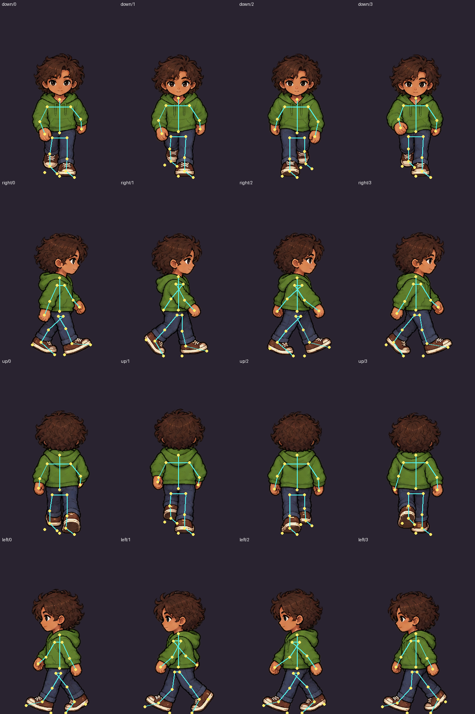
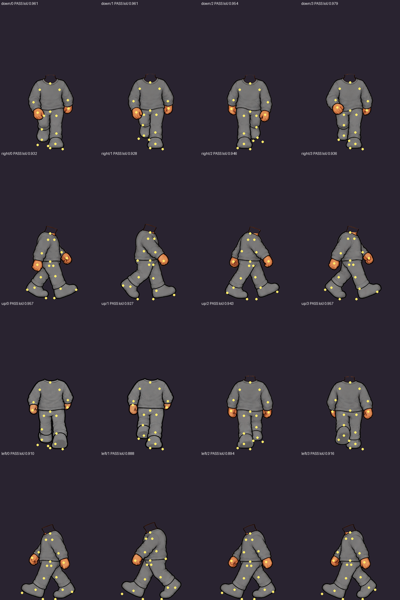
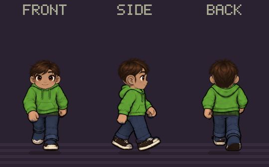
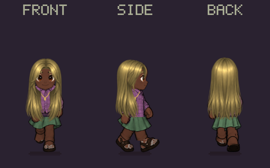

Custom walking · Phase 1
Four custom looks, with Remy and Priya beside them. Rows show front, right, back and left. These frames were captured from the game’s character renderer. The native view uses a 32-pixel world width; enlargements use nearest-neighbor scaling.
Awaiting visual approval. This sample covers hoodie, tee, flannel, overalls, jeans, skirt, sneakers and sandals. The rest of the wardrobe is Phase 2.
- Default hoodie
- Slim, long hair, skirt
- Broad, ponytail, overalls
- Hat, patterned tee
- Remy
- Priya
Open animated GIF · Review notes, provenance and validation limits · Registration results · Runtime results
Master skeleton and mannequin


Creator and mirror previews
Both use the same authored walk path. Their Walk and Idle controls remain available.

